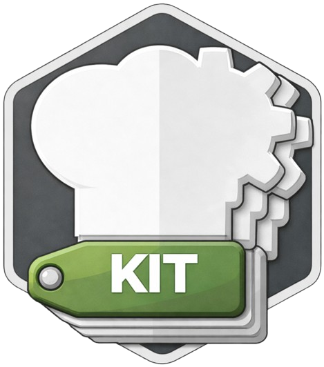

PROJECT
CyberChefKit
- Version
- 0.2.0-alpha
- License
- CLA Apache
- Platforms
- Linux · Windows · macOS · Kali · Android · Embedded
- Native
- Python · Flask · SQLAlchemy + multi-language backends

ZZX-LABS R&D // SOFTWARE // WEB MIRROR
Unified multi-language, offline-first transformation and analysis suite companion with local recipe execution, file analysis, cross-language implementation matrix, code/CLI generation, and optional local-server configuration.
MULTI-LANGUAGE // OFFLINE-FIRST TRANSFORMS
| Language | Role | Offline | CLI | GUI/Web |
|---|
PROJECT
IMPLEMENTATION FAMILY
The browser workbench demonstrates the common transformation contract while native ports target low-level, scripting, desktop, embedded, and server workflows.
CANONICAL CHILD DIRECTORIES
All implementations are children of /projects/software/cyberchefkit/.
REPOSITORY CHILD
cyberchefbash/
REPOSITORY CHILD
cyberchefbat/
WEB COMPANION BUILT
cyberchefc/
WEB COMPANION BUILT
cyberchefcpp/
WEB COMPANION BUILT
cyberchefcsharp/
REPOSITORY CHILD
cyberchefcss/
WEB COMPANION BUILT
cyberchefcy/
WEB COMPANION BUILT
cyberchefgo/
REPOSITORY CHILD
cyberchefhtml/
WEB COMPANION BUILT
cyberchefjava/
REPOSITORY CHILD
cyberchefjs/
WEB COMPANION BUILT
cyberchefkt/
REPOSITORY CHILD
cybercheflua/
REPOSITORY CHILD
cyberchefmpy/
WEB COMPANION BUILT
cyberchefperl/
REPOSITORY CHILD
cyberchefphp/
WEB COMPANION BUILT
cyberchefpy/
WEB COMPANION BUILT
cyberchefr/
REPOSITORY CHILD
cyberchefrb/
WEB COMPANION BUILT
cyberchefrs/